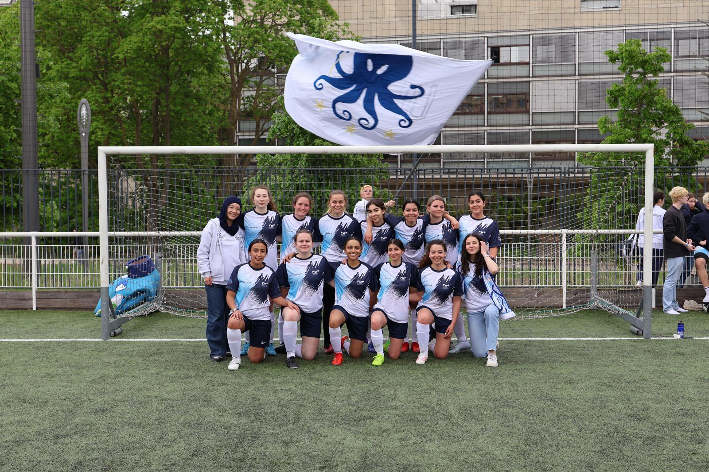
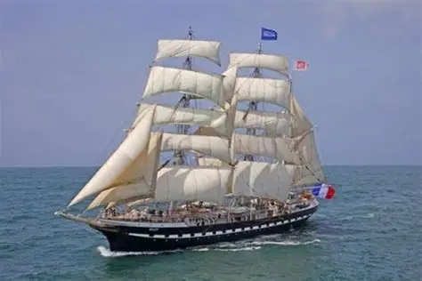
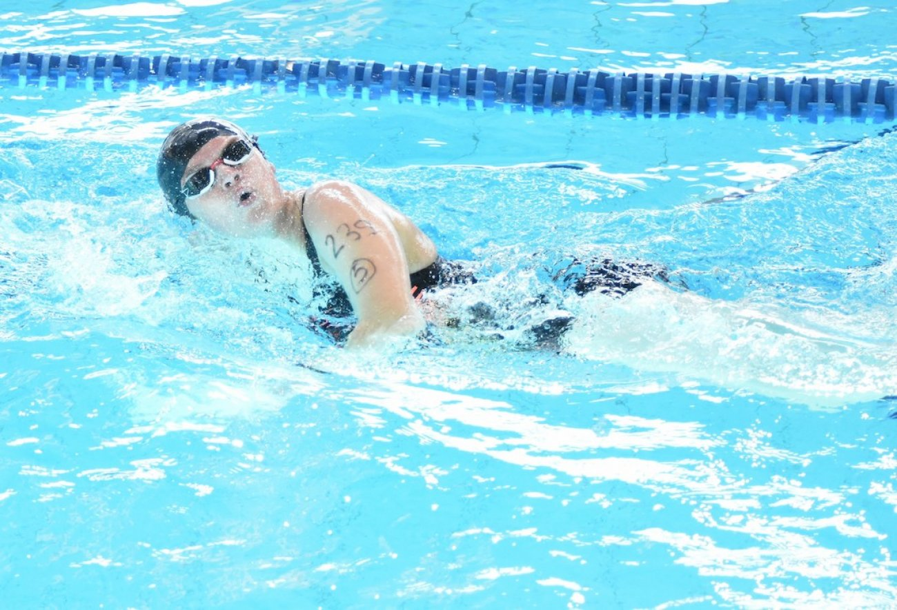
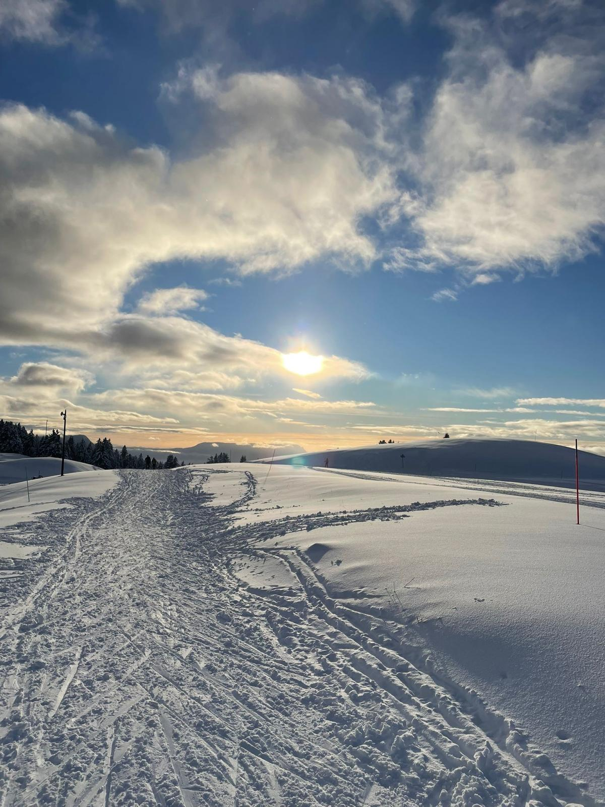
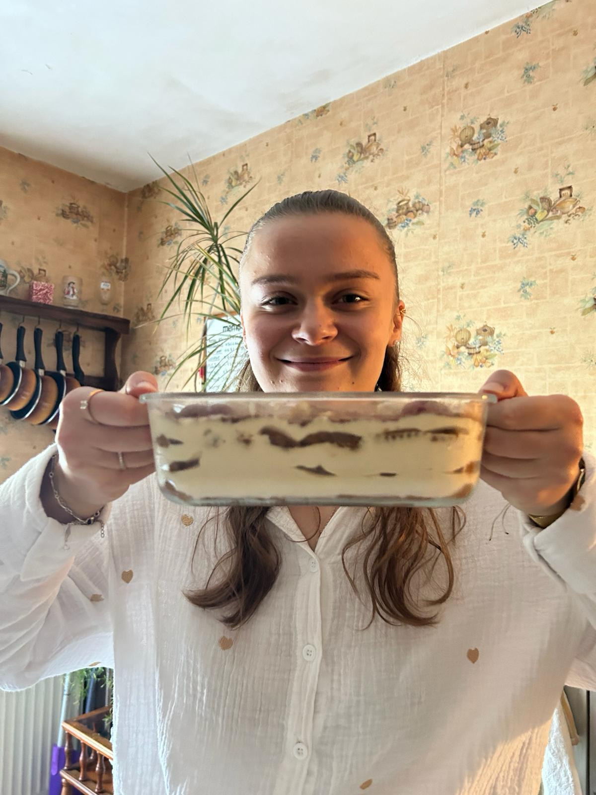

Football
Football has been a major part of my life: I played as a goalkeeper and team captain for fifteen years at regional level, and later spent five years as a departmental referee.
TeamworkEnduranceResilience
Sport, the sky and bricks: what keeps me balanced.
I need to move, create and experiment. My hobbies reflect this constant drive to explore and dive into experiences that inspire me.

Football has been a major part of my life: I played as a goalkeeper and team captain for fifteen years at regional level, and later spent five years as a departmental referee.

What I love about Lego is starting from nothing and watching something take shape in your hands. My next challenge: building the Belem from scratch, with no instructions, just bricks and an idea.

I swim a lot in my free time, and in 2024 I earned my Swimming Supervision Certificate, which showed me a more technical and safety-focused side of swimming.

I have completed around forty hours of flight training and earned my Aeronautical Initiation Certificate (BIA). I then received a scholarship to keep flying at the Beauvais-Tillé aeroclub, and I fully intend to complete my training after my studies.

I enjoy walking in the mountains just as much as exploring cities, always looking for new places to discover. I much prefer walking to taking the bus: it is my way of breathing, observing and enjoying the moment.

Sharing meals and discovering cultures through food and simplicity.

I love traveling, and my dream is to explore a faraway country someday. For now I have only visited Europe, but I want to discover the whole world and immerse myself in new cultures.
Looking for a motivated R&D intern for February 2027? Drop me a line, I reply quickly.